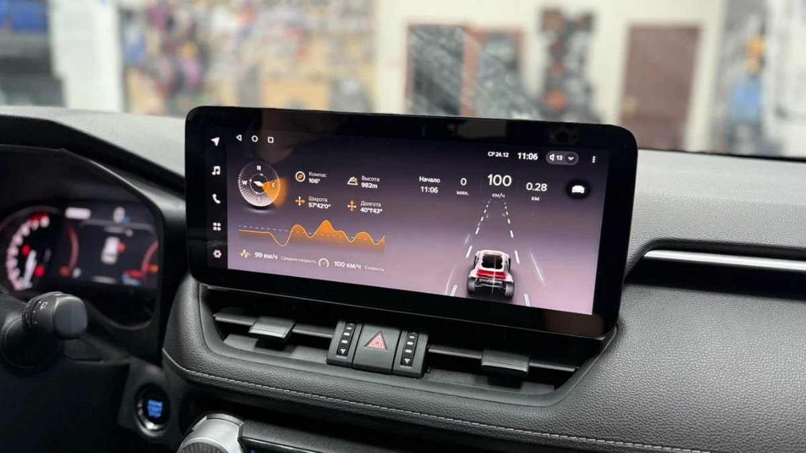

Вы уже решили, что старая магнитола уходит, и уже решили, что новая будет Teyes. Открываете каталог, а там CC3, CC3 2K, CC4, CC4L, CC4 Pro, и у каждой несколько вариантов памяти. Отзывы на форумах противоречат друг другу, продавец советует ту, что дороже, а разницу в двух соседних строках каталога вы не видите.
Магнитола Teyes из серии CC – это верхняя часть линейки бренда, и CC3 с CC4 закрывают одну и ту же задачу: большой экран, навигация, музыка, камеры, звонки. Различаются они поколением, начинкой и тем, насколько хорошо конкретная версия встаёт в вашу машину. Ниже разбираем, на что реально смотреть при выборе и почему последнее слово всегда за машиной, а не за названием.

Как устроена линейка Teyes и что значат буквы
У Teyes несколько серий, от простых до флагманских. CC – серия, на которую смотрят, когда хочется полного набора функций: хороший экран, достаточно памяти для навигатора и музыки одновременно, поддержка камер, развитые настройки звука.
Цифра в названии – поколение. CC4 новее, чем CC3. Буква L в названии у Teyes обычно означает облегчённую версию той же серии: часть возможностей урезана ради цены. Pro и 2K – расширенные исполнения: 2K, как следует из названия, относится к экрану более высокого разрешения. Что именно входит в конкретную поставку, всегда сверяют по спецификации, потому что начинка внутри одного названия может меняться от партии к партии.
Отсюда первое правило: сравнивать нужно не названия, а конкретные строки характеристик.
На что смотреть в характеристиках
- Оперативная и встроенная память. Это первое, что чувствуется в жизни. Навигатор, музыка в фоне и камера на задней передаче одновременно требуют оперативной памяти. Её нехватка выглядит так: экран задумывается, навигатор перезапускается, приложение музыки вылетает. Встроенная память нужна для офлайн-карт, музыки и приложений.
- Экран. Тип матрицы, яркость и разрешение. Зимой в Ярославле солнце низкое и бьёт прямо в экран на выезде из двора, а летом засвечивает его сверху. Яркий экран с хорошими углами обзора читается в обоих случаях.
- Звук. У Teyes развитый процессор звука: эквалайзер по полосам, задержки по каналам, настройка фронта и тыла. Если вы планируете внешний усилитель, проверьте, какие выходы есть у выбранной версии.
- Камеры. Поддержка камеры заднего вида есть у всех, а вот системы кругового обзора 360 поддерживаются не каждым исполнением. Если хотите 360 сейчас или потом, отметьте это сразу.
- Связь. Слот под SIM-карту для собственного интернета или раздача с телефона. С SIM навигатор и музыка работают сразу после запуска, без лишних действий.
- CarPlay и Android Auto. Если вы привыкли к интерфейсу телефона на экране машины, уточните, как это реализовано в выбранной версии.
Магнитола Teyes CC3: кому подходит
Магнитола Teyes CC3 – проверенное поколение, которое ставят давно, и под неё хорошо отработаны рамки и переходники на множество машин. Это довод в пользу CC3, если ваша машина не самая новая или редкая: шанс, что всё встанет и заработает с первого раза, выше.
CC3 разумно брать, когда нужна полноценная мультимедиа с хорошим звуком и камерой, но без погони за свежим поколением. Если в CC3 вам хватает памяти и функций, переплачивать за новую цифру в названии смысла нет.
Магнитола Teyes CC4: что даёт новое поколение
Магнитола Teyes CC4 – следующее поколение серии. Новое поколение обычно приносит более свежую начинку и версию системы, а значит, запас на будущие обновления приложений. Навигаторы и музыкальные сервисы с каждым годом требуют больше ресурсов, и то, что сегодня летает, через пару лет может начать задумываться.
Магнитола Teyes CC4L – облегчённый вариант поколения: подходит, если хочется новое поколение, но часть возможностей вам не нужна. На Teyes CC4 Pro смотрят те, кому нужен максимум по начинке. Разницу между ними в каждом конкретном случае проверяют по спецификации: какие именно функции добавлены или убраны и важны ли они вам.

Какую память брать
Конфигурацию памяти в каталоге пишут двумя числами через дробь: первое – оперативная, второе – встроенная, например 4/64. Ориентироваться можно по тому, как вы будете пользоваться экраном.
- Навигатор, музыка, камера заднего вида. Хватает младших и средних конфигураций, главное, чтобы навигатор не выгружался из памяти при включении камеры.
- Навигатор плюс видео на стоянке, регистратор через магнитолу, много приложений. Стоит смотреть на старшие конфигурации: запас оперативной памяти здесь заметнее всего.
- Система кругового обзора 360. Она сама по себе нагружает магнитолу, поэтому экономить на памяти тут не стоит.
Встроенную память выбирают по офлайн-картам и музыке. Если слушаете через сервисы по интернету, большой объём не нужен.
Что проверить при покупке
Teyes – популярный бренд, и под его названием иногда продают то, что к нему отношения не имеет. Перед покупкой проверьте, что магнитола получает официальные обновления, а в настройках «О системе» указаны та же модель и та же память, что в описании. Сохраните документы: гарантия производителя действует, когда понятно, откуда магнитола.
Почему машина важнее названия
Самая частая ошибка – выбрать модель по обзору, а потом выяснить, что под вашу машину она встаёт хуже соседней. Что решает на практике.
- Рамка под вашу машину и год. Штатные рамки делают под конкретные модели, и под одну и ту же машину может быть рамка на 9 дюймов, но не на 10, или наоборот. Иногда выбор диагонали сужает и выбор серии.
- CAN-декодер. Кнопки руля, климат на экране, открытые двери, парктроники работают через декодер под вашу машину. Нужно, чтобы для вашей модели он был и поддерживался выбранной магнитолой.
- Штатные функции. Климат на штатном экране, заводской усилитель, штатная камера. Если что-то из этого есть, комплект подбирают так, чтобы ничего не потерялось.
- Ваша акустика. Если в машине уже стоит усилитель или процессор, магнитолу выбирают с нужными выходами.
Поэтому правильный порядок такой: сначала смотрят машину и что в ней есть, потом подбирают серию и версию.
Установка магнитолы Teyes: что важно
Установка магнитолы Teyes мало отличается от установки другой штатной Android-магнитолы, но есть детали.
- Подключение через переходник без разрезания штатной проводки. Тогда при продаже машины можно вернуть заводскую магнитолу.
- Выносной микрофон на стойке или у плафона: голосовые команды и звонки работают заметно лучше.
- GPS-антенна там, где её не закрывает металл.
- Проверка всего до сборки панели: кнопки руля, камера, звук на всех динамиках, климат.
Подключение магнитолы Teyes после установки
Подключение магнитолы Teyes к телефону и к интернету делают при первом запуске: SIM-карта или раздача с телефона, Bluetooth для звонков и музыки, аккаунт для приложений. В настройках выбирают тип CAN-декодера под машину, если он не определился автоматически, обучают кнопки руля и включают камеру с разметкой. Отдельно стоит потратить вечер на звук: выставить эквалайзер и баланс под свою акустику, а не оставлять заводские настройки.
Частые вопросы
CC3 или CC4 – что брать, если бюджет ограничен? Смотрите, что вам нужно по памяти и функциям. Если CC3 в нужной комплектации закрывает задачи, разумнее взять её и оставить деньги на рамку, декодер и камеру, чем взять CC4 в урезанной версии без того, что вам нужно.
Teyes CC4 Pro стоит своих денег? Если вы используете много приложений одновременно, планируете камеры 360 или внешний звук и хотите запас на годы, может стоить. Если нужны навигатор, музыка и камера заднего вида, версии попроще хватит.
Встанет ли Teyes на мою машину? На большинство популярных машин есть рамки и декодеры. Но проверять нужно по модели, году и комплектации: от этого зависит и рамка, и сохранность штатных функций.
Чем Teyes отличается от дешёвых Android-магнитол? В первую очередь поддержкой: обновления системы, развитые настройки звука, декодеры под конкретные машины. У дешёвых безымянных магнитол заявленная память и реальная иногда расходятся, а обновлений нет совсем.
Можно ли поставить Teyes самому? Можно, если вы уверенно снимаете панели и понимаете, какой декодер нужен. Но ошибка с питанием или декодером зимой выливается в севший аккумулятор или неработающий руль, а сломанные на морозе клипсы потом скрипят.
Где купить и поставить Teyes в Ярославле
Студия «Звук на Волге», Ярославль, проспект Октября, 82б. Пн–пт 8:30–20:00, сб–вс 10:00–19:00. Teyes – один из брендов, с которыми мы работаем: подберём серию и версию под вашу машину, установим и настроим навигатор, камеру заднего вида и регистратор. На оборудование действует гарантия производителя, на работы – гарантия студии. Стоимость посчитаем по вашей машине.
Подробнее и запись: Android-магнитолы с установкой в Ярославле. Телефон +7 902 220-75-55, сообщения в ВК: vk.me/avtostil_yaroslavl.
Раньше нас знали как «Автостиль». Мы обновились и, раз занимаемся звуком в Ярославле, назвались «Звук на Волге». Адрес тот же.